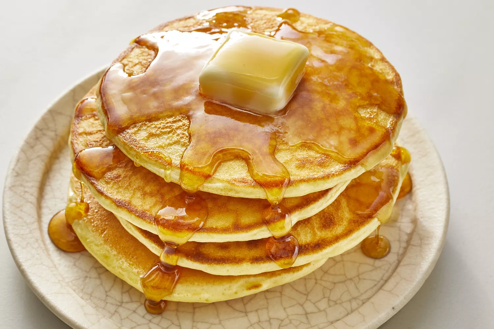

Pancakes Recipe

How to make Pancakes
You'll find a detailed ingredient list and step-by-step instructions in the recipe below, but let's go over the
basics:
Pancake Ingredients
- Flour
- Baking Powder
- Sugar
- Salt
- Milk and Butter
- Egg
Steps:
- Sift the dry ingredients together.
- Make a well, then add the wet ingredients. Stir to combine.
- Scoop the batter onto a hot griddle or pan.
- Cook for two to three minutes, then flip.
- Continue cooking until brown on both sides.